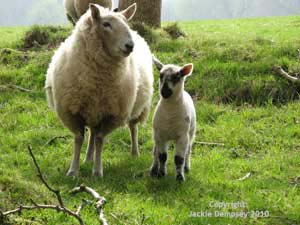

The Austrian Alps offer the hill walker thousands of kilometers of marked trails through varied and amazing mountain scenery. From the lush fern-filled forests of the lower slopes to the rugged and craggy high altitude ridge walks.
There is also the chance to take part in summer skiing on the glaciers - the Stubai and Hintertux glaciers are open for winter sports all year, even in the middle of a hot summer.
You can't walk too far in the Austrian Alps without encountering one of the many wonderful mountain restaurants, which offer all manner of delicious food, in particular apple strudel, a speciality of the area. This means it is less important to carry food and drink with you on your walk and can lighten the load in your rucksack!
You will also see plenty of wildlife - there are ibex, deer, and most people's favourite, the marmot to be seen regularly in the mountains. The alpine flowers are at their best in June, when the meadows are alive with colour and butterflies.